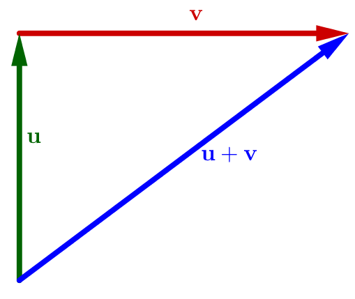
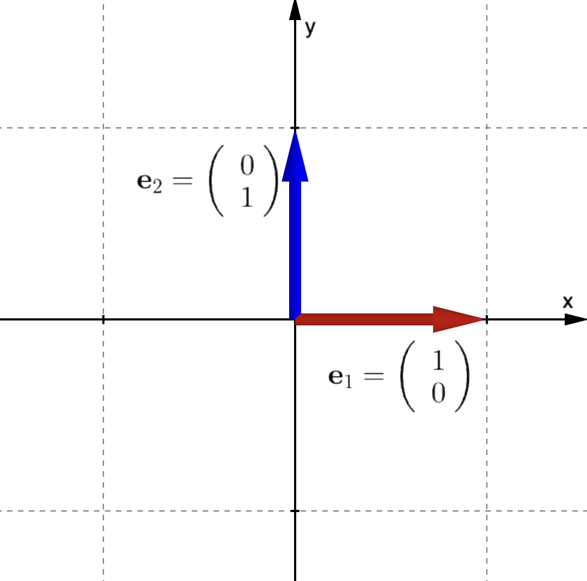
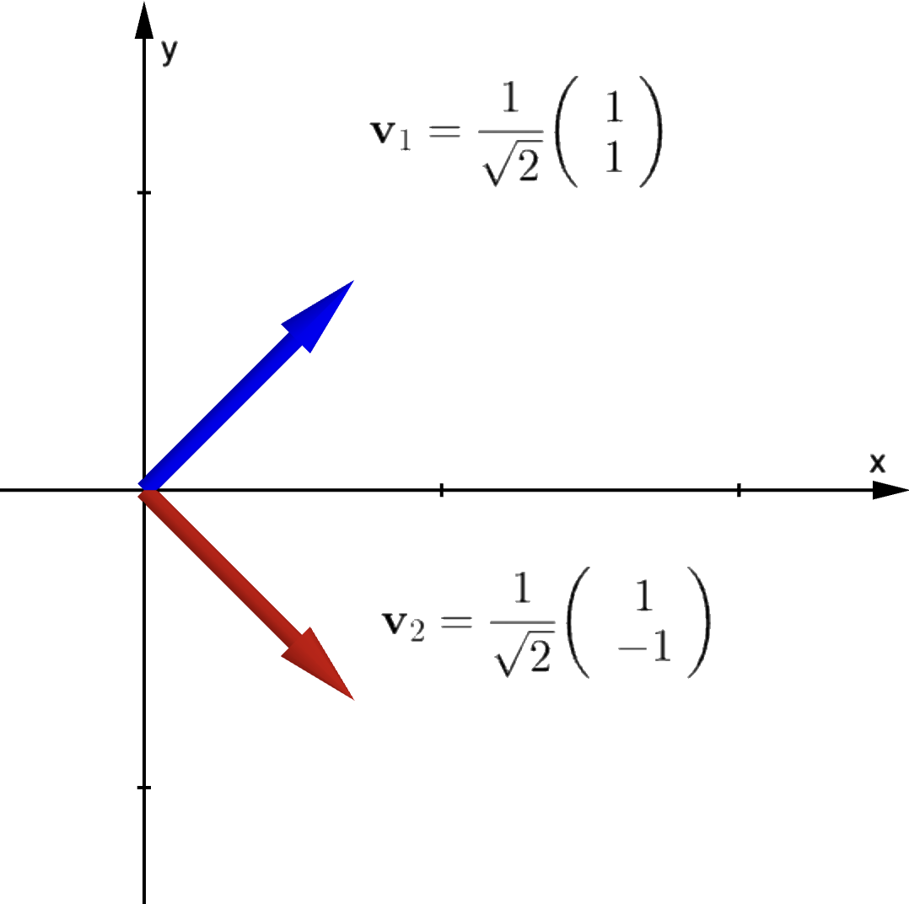
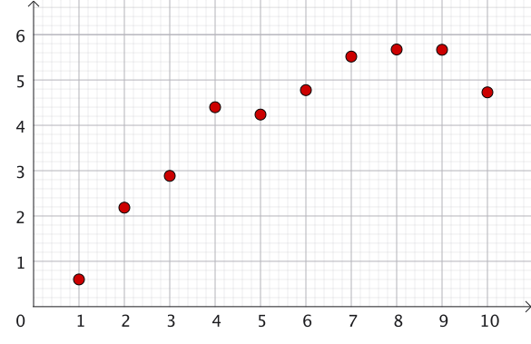
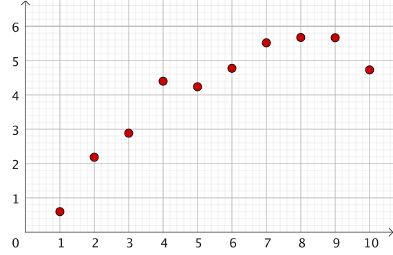
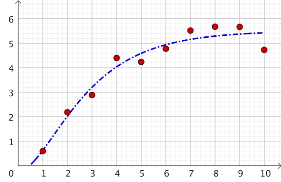
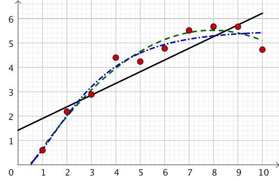

Linear Algebra & Applications
2201NSC
Inner Product Spaces
Motivation: Dot Product
Definition: The dot product of two vectors $\mathbf{x} = \begin{pmatrix}x_1 \\ x_2 \\ x_3\end{pmatrix}, \mathbf{y} = \begin{pmatrix}y_1 \\ y_2 \\ y_3\end{pmatrix} \in \mathbb{R}^3$ is a scalar given by:
$ \mathbf{x} \pd \mathbf{y} = x_1 y_1 + x_2 y_2 + x_3 y_3 $ $ = \mathbf{x}^T \mathbf{y} $
Alternative Definition: $\mathbf{x} \pd \mathbf{y} = \|\mathbf{x}\| \|\mathbf{y}\| \cos \theta$, where $\theta$ is the angle between $\mathbf{x}$ and $\mathbf{y}$.
For a vector $\mathbf{v}\in \mathbb R^3$:
$ \mathbf{v} \pd \mathbf{v}$ $ = \|\mathbf{v}\| \|\mathbf{v}\| \cos(0) $ $ =\|\mathbf{v}\|^2 $
$ \implies \|\mathbf{v}\| = \sqrt{\mathbf{v} \pd \mathbf{v}} $ $ = \sqrt{v_1^2 + v_2^2 + v_3^2}$
Dot Product Example
If $\mathbf{x} = \begin{pmatrix} 3 \\ -2 \\ 1 \end{pmatrix}$ and $\mathbf{y} = \begin{pmatrix} 4 \\ 3 \\ 2 \end{pmatrix}$:
$ \mathbf{x}^T \mathbf{y} $ $ = 3(4) + (-2)(3) + 1(2) $ $ =8 $
$\|\mathbf{x}\| $ $= \sqrt{3^2 + (-2)^2 + 1^2} $ $= \sqrt{14},$ $\quad \|\mathbf{y}\| = \sqrt{4^2 + 3^2 + 2^2} $ $= \sqrt{29}$
$\cos \theta = \dfrac{\mathbf{x} \pd \mathbf{y}}{\norm{\mathbf{x}}\norm{\mathbf{y}}}$ $= \dfrac{8}{\sqrt{14}\sqrt{29}} $ $\implies \theta \approx 66.6^\circ$
👉 $\mathbf{x}$ and $\mathbf{y}$ are perpendicular (orthogonal) $\iff \mathbf{x} \pd \mathbf{y} = 0$.
MATLAB/OCTAVE Commands
| Dot product of vectors \( \mathbf{u}, \mathbf{v} \): | dot(u, v) |
| Norm of vector \( \mathbf{v} \): | norm(v) |
| Normalise vector \( \mathbf{v} \): | w = v / norm(v) |
| Angle between \( \mathbf{u} \) and \( \mathbf{v} \): | theta = acos(dot(u,v) / (norm(u)*norm(v))) |
NOTE! The MATLAB/Octave command
length(v) finds
the number of entries in a 1D vector and is quite different from norm(v).
Definition of an Inner Product
We wish to generalise these definitions, particularly for situations where we might not have a geometrical picture to guide us (more on that later). From now on, we will replace the terms dot product by inner product, and length by norm.
Definition: An inner product assigns to each pair $\mathbf{x}, \mathbf{y} \in V$ a scalar $\langle \mathbf{x}, \mathbf{y} \rangle \in \mathbb{R}$ satisfying:
1. Positivity: $\langle \mathbf{x}, \mathbf{x} \rangle \ge 0,\,$ with $\,\langle \mathbf{x}, \mathbf{x} \rangle = 0 \iff \mathbf{x} = \mathbf{0}$
2. Symmetry: $\langle \mathbf{x}, \mathbf{y} \rangle = \langle \mathbf{y}, \mathbf{x} \rangle \quad \forall \; \mathbf{x}, \mathbf{y} \in V$
3. Linearity: $\langle \alpha \mathbf{x} + \beta \mathbf{y}, \mathbf{z} \rangle = \alpha \langle \mathbf{x}, \mathbf{z} \rangle + \beta \langle \mathbf{y}, \mathbf{z} \rangle \quad \forall \; \alpha, \beta \in \mathbb{R}$
- Norm: $\|\mathbf{x}\| = \sqrt{\langle \mathbf{x}, \mathbf{x} \rangle}$
- Unit Vector: $\ds\hat{\mathbf{x}} = \frac{\mathbf{x}}{\|\mathbf{x}\|}$
- Orthogonality: $\mathbf{x} \perp \mathbf{y} \iff \langle \mathbf{x}, \mathbf{y} \rangle = 0$
Why this Definition for an Inner Product? 🤔
Definition: An inner product assigns to each pair $\mathbf{x}, \mathbf{y} \in V$ a scalar $\langle \mathbf{x}, \mathbf{y} \rangle \in \mathbb{R}$ satisfying:
1. Positivity: $\langle \mathbf{x}, \mathbf{x} \rangle \ge 0,\,$ with $\,\langle \mathbf{x}, \mathbf{x} \rangle = 0 \iff \mathbf{x} = \mathbf{0}$
2. Symmetry: $\langle \mathbf{x}, \mathbf{y} \rangle = \langle \mathbf{y}, \mathbf{x} \rangle \quad \forall \; \mathbf{x}, \mathbf{y} \in V$
3. Linearity: $\langle \alpha \mathbf{x} + \beta \mathbf{y}, \mathbf{z} \rangle = \alpha \langle \mathbf{x}, \mathbf{z} \rangle + \beta \langle \mathbf{y}, \mathbf{z} \rangle \quad \forall \; \alpha, \beta \in \mathbb{R}$
- Positivity: Allows taking the square root of $\langle \mathbf{x}, \mathbf{x} \rangle$ to measure "size" (norm). Ensures $\|\mathbf{x}\| = 0 \iff \mathbf{x} = \mathbf{0}$.
- Symmetry: Order in which vectors occur in $\langle \mathbf{x}, \mathbf{y} \rangle$ does not matter.
- Linearity: Essential algebraic property needed for algebraic manipulations and proofs.
The Dot Product is an Inner Product
For vectors $\mathbf{x}, \mathbf{y} \in \mathbb{R}^n$, the standard inner product is:
$ \langle \mathbf{x}, \mathbf{y} \rangle $ $ =\mathbf x\pd \mathbf y = \mathbf{x}^T \mathbf{y} $ $\ds= \sum_{i=1}^n x_i y_i $ $= x_1 y_1 + x_2 y_2 + \dots + x_n y_n $
Euclidean Norm:
$ \|\mathbf{x}\| = \sqrt{\langle \mathbf{x}, \mathbf{x} \rangle} $ $ = \sqrt{x_1^2 + x_2^2 + \dots + x_n^2} $
Orthogonality: $\;\mathbf{x}, \mathbf{y} \in \mathbb{R}^n$ are orthogonal $\iff \langle \mathbf{x}, \mathbf{y} \rangle = 0$.
Standard Inner Product Examples
- The vector $\mathbf{0}$ is orthogonal to every vector in $\mathbb{R}^n$.
- $\begin{pmatrix}3 \\ 2\end{pmatrix} \perp \begin{pmatrix}-4 \\ 6\end{pmatrix}$ in $\mathbb{R}^2$, since $3(-4) + 2(6) = 0$.
- $\begin{pmatrix}2 \\ -3 \\ 1\end{pmatrix} \perp \begin{pmatrix}1 \\ 1 \\ 1\end{pmatrix}$ in $\mathbb{R}^3$, since $2(1) - 3(1) + 1(1) = 0$.
- If $\mathbf{x} = \begin{pmatrix}3 \\ 4\end{pmatrix}$, then $\|\mathbf{x}\| = \sqrt{3^2 + 4^2} = 5$, and $\hat{\mathbf{x}} = \begin{pmatrix}3/5 \\ 4/5\end{pmatrix}$.
Verification: Standard Inner Product on $\mathbb{R}^n$
Given \(\mathbf x = \left(x_1, x_2,\ldots,x_n\right)^T\), \(\mathbf y = \left(y_1, y_2,\ldots,y_n\right)^T\), \(\mathbf z = \left(z_1, z_2,\ldots,z_n\right)^T\in\mathbb R^n\)
1. Positivity: $\;\langle \mathbf{x}, \mathbf{x} \rangle = \ds \sum x_i^2 \ge 0$.
Sum of squares is 0 iff each $x_i = 0$ $ \iff \mathbf{x} = \mathbf{0}$.
2. Symmetry: $\;\langle \mathbf{x}, \mathbf{y} \rangle =\ds \sum x_i y_i $ $=\ds \sum y_i x_i$ $\ds = \langle \mathbf{y}, \mathbf{x} \rangle$
3. Linearity: $ \langle \alpha \mathbf{x} + \beta \mathbf{y}, \mathbf{z} \rangle $ $\ds = \sum \big(\alpha x_i + \beta y_i\big)z_i$ $\ds = \sum \big(\alpha x_iz_i + \beta y_iz_i\big)$
$\ds = \alpha \sum x_i z_i + \beta \sum y_i z_i $ $ \ds = \alpha \langle \mathbf{x}, \mathbf{z} \rangle + \beta \langle \mathbf{y}, \mathbf{z} \rangle $
Weighted inner products on $\mathbb{R}^n$
With weights $\;w_i > 0,$ $w_i\in \mathbb R$: $\;\ds \langle \mathbf{x}, \mathbf{y} \rangle = \sum_{i=1}^n w_i x_i y_i$
Example in $\mathbb{R}^2$: Define $\langle \mathbf{x}, \mathbf{y} \rangle = 2x_1 y_1 + x_2 y_2$.
$\begin{pmatrix}3 \\ 2\end{pmatrix}$ and $\begin{pmatrix}-4 \\ 6\end{pmatrix}$ are not orthogonal: $\color{red}{2}(3)(-4) + \color{red}{1}(2)(6) $ $= -12 $ $\ne 0$.
For $\mathbf{x} = \begin{pmatrix}2 \\ 1\end{pmatrix} $ $\implies \|\mathbf{x}\| = \sqrt{2\left(2^2\right) + 1\left(1^2\right)} $ $= 3$.
For $\mathbf{y} = \begin{pmatrix}1 \\ 2\end{pmatrix} $ $\implies \|\mathbf{y}\| = \sqrt{2\left(1^2\right) + 1\left(2^2\right)} $ $= \sqrt{6}$ $\ne \|\mathbf{x}\|$ 👈
Inner Product on Function Spaces $C[a,b]$
Consider $C[a,b]$, the set of continuous functions on the interval $[a,b]$. The standard inner product if $C[a,b]$ is:
$ \ds\langle f, g \rangle = \int_a^b f(x)g(x) \, dx $
Example on $C[0,1]$: Calculate $\langle x, \sin(\pi x) \rangle$:
$\langle x, \sin(\pi x) \rangle $ $\ds = \int_0^1 x \sin(\pi x) \, dx $ $\ds = \left[ \frac{-x \cos(\pi x)}{\pi} \right]_0^1 + \int_0^1 \frac{\cos(\pi x)}{\pi} \, dx$
$\ds = \frac{1}{\pi} + \left[ \frac{\sin(\pi x)}{\pi^2} \right]_0^1 $ $\ds = \frac{1}{\pi}\qquad \qquad \qquad \quad\;$
Note: Here we used integration by parts $\ds\int u\,dv = uv - \int v\,du$
Orthogonality
As in $\R^n$ with inner product given by the usual dot product, we say that two vectors $\bfu,\bfv\in V$ are orthogonal if $$ \langle\bfu,\bfv\rangle=0. $$ We need a bit of preparation before we can talk more generally about the angle between two vectors.
Remark: Notion of orthogonality is also relative to the inner product used.

Pythagorean Theorem
Let $V$ be a real inner product space, and let $\bfu,\bfv\in V$. Then, $$ ||\bfu+\bfv||^2=||\bfu||^2+||\bfv||^2 \quad\Longleftrightarrow\quad \langle\bfu,\bfv\rangle=0. $$
|
Geometrically:  |
On the other hand:
Hence $$||\bfu+\bfv||^2=||\bfu||^2+||\bfv||^2 \iff \langle\bfu,\bfv\rangle=0. \,\blacksquare$$ |
How "Close" Are Two Arbitrary Vectors?
In $\mathbb{R}^2$ or $\mathbb{R}^3$, angle $\theta$ measures alignment:
$$ \cos \theta = \frac{\mathbf{x}^T \mathbf{y}}{\|\mathbf{x}\| \|\mathbf{y}\|}, \quad 0 \le \theta \le \pi $$- Smaller angle $\implies$ closer directional match.
- Dot product close to $\|\mathbf{x}\| \|\mathbf{y}\| \implies$ aligned.
- Dot product close to $-\|\mathbf{x}\| \|\mathbf{y}\| \implies$ opposite directions ($\theta = 180^\circ$).
Question: If we are using a different inner product, can we find an analogous definition for the angle between them?
Cauchy-Schwarz Inequality
Let $V$ be a real inner product space, and let $\bfu,\bfv\in V$. Then, $$ |\langle\bfu,\bfv\rangle|\leq||\bfu||\,||\bfv||. $$ Moreover, this inequality is an equality if and only if $\bfu$ or $\bfv$ is a scalar multiple of the other vector.
For $\u = \mathbf 0\;$ ✅ 😃. For $\u \neq \mathbf 0$, let $t\in \R$ and
$a = \langle \u, \u\rangle $, $b = 2 \langle \u, \v\rangle $, $c = \langle \v, \v\rangle .$
Then $0 \leq \langle t\,\u + \v, t\,\u + \v \rangle$
$ = \langle \u, \u\rangle t^2 + 2\langle \u, \v \rangle t + \langle \v, \v\rangle$
$ \qquad \qquad\quad \ds = at^2 + b t + c$
Cauchy-Schwarz Inequality
👉 $0 \leq \langle t\,\u + \v, t\,\u + \v \rangle$ $ = \langle \u, \u\rangle t^2 + 2\langle \u, \v \rangle t + \langle \v, \v\rangle$ $ \ds = at^2 + b t + c$
In this case we must have that $b^2 -4ac \leq 0$. So \[ 4 \langle \u, \v\rangle^2 - 4 \langle \u, \u\rangle\langle \v, \v\rangle \leq 0. \] Or equivalently \[ \langle \u, \v\rangle^2 \leq \langle \u, \u\rangle \langle \v, \v\rangle . \]
Taking square roots of both sides and using the fact that $\langle \u, \u\rangle$ and $\langle \v, \v\rangle $ nonnegative yields
$\ds \abs{\langle \u, \v\rangle}\leq \langle \u, \u\rangle^{1/2} \langle \v, \v\rangle ^{1/2}\; $ or $\; |\langle\bfu,\bfv\rangle|\leq||\bfu||\,||\bfv||.\;\blacksquare$
Cauchy-Schwarz Inequality & Angle
Cauchy-Schwarz Inequality: For arbitrary vectors $\mathbf{x}, \mathbf{y}$,
$$ |\langle \mathbf{x}, \mathbf{y} \rangle| \le \|\mathbf{x}\| \|\mathbf{y}\| $$Rewritten as: $\;\ds -1 \le \frac{\langle \mathbf{x}, \mathbf{y} \rangle}{\|\mathbf{x}\| \|\mathbf{y}\|} \le 1, \quad (\|\mathbf{x}\|\|\mathbf{y}\|\neq 0)$
Angle Definition: Defines unique angle $\theta \in [0, \pi]$ via:
$$ \cos \theta = \frac{\langle \mathbf{x}, \mathbf{y} \rangle}{\|\mathbf{x}\| \|\mathbf{y}\|}, \quad 0\leq \theta \leq \pi $$📝 Practice problems
Problem 1: $\mathbf{x} = (2,2,-1)^T, \,\mathbf{y} = (5,-3,2)^T \in \mathbb{R}^3$ with $\langle \mathbf{x}, \mathbf{y} \rangle = \mathbf{x}^T \mathbf{y}$.
- Show $|\langle \mathbf{x}, \mathbf{y} \rangle| \le \|\mathbf{x}\| \|\mathbf{y}\|$.
- Find the angle $\theta$ between them.
Problem 2: On $C\left[0,1\right]$ with $\ds\langle f,g \rangle = \int_0^1 f(x)g(x) \, dx$:
- Calculate $\langle e^x, e^{-x} \rangle$.
- Prove that $\langle f,g \rangle$ satisfies the inner product axioms.
📝 Solution – Problem 1
Problem 1: $\mathbf{x} = (2,2,-1)^T, \,\mathbf{y} = (5,-3,2)^T \in \mathbb{R}^3$ with $\langle \mathbf{x}, \mathbf{y} \rangle = \mathbf{x}^T \mathbf{y}$.
- Show $|\langle \mathbf{x}, \mathbf{y} \rangle| \le \|\mathbf{x}\| \|\mathbf{y}\|$.
Step 1: Compute the inner product.
$\langle \mathbf{x},\mathbf{y}\rangle $ $=(2)(5)+(2)(-3)+(-1)(2) $ $=10-6-2=2.$
Step 2: Compute the norms.
$\|\mathbf{x}\| $ $=\sqrt{2^2+2^2+(-1)^2} $ $=\sqrt9=3, $
$\|\mathbf{y}\| $ $=\sqrt{5^2+(-3)^2+2^2} $ $=\sqrt{38}.$
Step 3: Verify the Cauchy-Schwarz inequality. $|\langle\mathbf{x},\mathbf{y}\rangle|=|2|=2,$
$\|\mathbf{x}\|\,\|\mathbf{y}\|$ $=3\sqrt{38}\approx18.49,$ and $2\lt 3\sqrt{38},\,$ so the inequality holds. 😀
📝 Solution – Problem 1
Problem 1: $\mathbf{x} = (2,2,-1)^T, \,\mathbf{y} = (5,-3,2)^T \in \mathbb{R}^3$ with $\langle \mathbf{x}, \mathbf{y} \rangle = \mathbf{x}^T \mathbf{y}$.
- Find the angle $\theta$ between them.
Use the formula:
$\ds \cos\theta = \frac{\langle\mathbf{x},\mathbf{y}\rangle} {\|\mathbf{x}\|\,\|\mathbf{y}\|} $ $\ds =\frac{2}{3\sqrt{38}}$ $\approx0.1082.\;$
Then $ \;\boxed{ \theta =\cos^{-1}\!\left(\frac{2}{3\sqrt{38}}\right) \approx83.8^\circ }$
📝 Solution – Problem 2
Problem 2: On $C\left[0,1\right]$ with $\ds\langle f,g \rangle = \int_0^1 f(x)g(x) \, dx$:
- Calculate $\langle e^x, e^{-x} \rangle$.
That is:
$\;\displaystyle \langle e^x,e^{-x}\rangle$ $\displaystyle=\int_0^1 e^xe^{-x}\,dx$ $\displaystyle=\int_0^1 1\,dx$ $\displaystyle=1.$
📝 Solution – Problem 2
Problem 2: On $C\left[0,1\right]$ with $\ds\langle f,g \rangle = \int_0^1 f(x)g(x) \, dx$:
- Prove that $\langle f,g \rangle$ satisfies the inner product axioms.
Symmetry: $\;\displaystyle \langle f,g\rangle$ $\displaystyle=\int_0^1 f(x)g(x)\,dx$ $\displaystyle=\int_0^1 g(x)f(x)\,dx$ $\displaystyle=\langle g,f\rangle.$
Linearity: $\displaystyle \langle \alpha f(x)+\beta h(x),g(x)\rangle$ $\displaystyle=\int_0^1 \big(\alpha f(x)+\beta h(x)\big)g(x)\,dx$ $\displaystyle=a\langle f,g\rangle+b\langle h,g\rangle.$
Positiveness: $\displaystyle \langle f,f\rangle$ $\displaystyle=\int_0^1 f(x)^2\,dx$ $\displaystyle\ge 0.$ If $\displaystyle \langle f,f\rangle=0,$ then $\displaystyle f(x)\equiv0.$
Therefore $\,\boxed{\displaystyle \langle f,g\rangle = \int_0^1 f(x)g(x)\,dx \text{ is an inner product on }C[0,1].}$
Application: Information Retrieval
Consider searching a database for documents that contains the frequency of certain key words. If we want to find documents on a single topic, then I can search for documents that contain that word. What is the best match? Is it the one that contains that word the most? Or is it the one more focussed on that topic? How could I find the best match?
Application: Information Retrieval
Vector Search: Represent each document as a keyword-frequency vector. Find the document whose vector is most closely aligned with the search vector using the inner product.
Scenario: A website has 8 modules ($M_1 \dots M_8$) for learning linear algebra, evaluated across key search terms. Suppose each learning module is treated as a document in our database.
| Keywords | M1 | M2 | M3 | M4 | M5 | M6 | M7 | M8 |
|---|---|---|---|---|---|---|---|---|
| determinants | 0 | 6 | 3 | 0 | 1 | 0 | 1 | 1 |
| eigenvalues | 0 | 0 | 0 | 0 | 0 | 5 | 3 | 2 |
| linear | 5 | 4 | 4 | 5 | 4 | 0 | 3 | 3 |
| matrices | 6 | 5 | 3 | 4 | 3 | 4 | 3 | 2 |
| numerical | 0 | 0 | 0 | 0 | 3 | 0 | 4 | 3 |
| orthogonality | 0 | 0 | 0 | 4 | 0 | 6 | 0 | 2 |
| spaces | 0 | 0 | 5 | 2 | 3 | 3 | 0 | 1 |
| systems | 5 | 3 | 3 | 2 | 4 | 2 | 1 | 1 |
| transformations | 0 | 0 | 0 | 5 | 1 | 3 | 1 | 0 |
| vector | 0 | 4 | 4 | 4 | 3 | 1 | 0 | 3 |
Application: Information Retrieval
| Keywords | M1 | M2 | M3 | M4 | M5 | M6 | M7 | M8 |
|---|---|---|---|---|---|---|---|---|
| determinants | 0 | 6 | 3 | 0 | 1 | 0 | 1 | 1 |
| eigenvalues | 0 | 0 | 0 | 0 | 0 | 5 | 3 | 2 |
| linear | 5 | 4 | 4 | 5 | 4 | 0 | 3 | 3 |
| matrices | 6 | 5 | 3 | 4 | 3 | 4 | 3 | 2 |
| numerical | 0 | 0 | 0 | 0 | 3 | 0 | 4 | 3 |
| orthogonality | 0 | 0 | 0 | 4 | 0 | 6 | 0 | 2 |
| spaces | 0 | 0 | 5 | 2 | 3 | 3 | 0 | 1 |
| systems | 5 | 3 | 3 | 2 | 4 | 2 | 1 | 1 |
| transformations | 0 | 0 | 0 | 5 | 1 | 3 | 1 | 0 |
| vector | 0 | 4 | 4 | 4 | 3 | 1 | 0 | 3 |
To search for the words orthogonality, spaces, vector, we use the normalized search vector
$\mathbf{v} =(0,0,0,0,0, 1, 1, 0, 0, 1)^T$
$\hat{\mathbf{v}}=\mathbf{x} \approx (0,0,0,0,0, 0.577, 0.577, 0, 0, 0.577)^T$
Application: Information Retrieval
Define the keyword-document matrix whose columns are the document vectors:
\( A=\begin{pmatrix} | & | & & | \\ \mathbf{M}_1 & \mathbf{M}_2 & \cdots & \mathbf{M}_8 \\ | & | & & | \\ \end{pmatrix} = \begin{pmatrix} 0&6&3&0&1&0&1&1\\ 0&0&0&0&0&5&3&2\\ 5&4&4&5&4&0&3&3\\ 6&5&3&4&3&4&3&2\\ 0&0&0&0&3&0&4&3\\ 0&0&0&4&0&6&0&2\\ 0&0&5&2&3&3&0&1\\ 5&3&3&2&4&2&1&1\\ 0&0&0&5&1&3&1&0\\ 0&4&4&4&3&1&0&3 \end{pmatrix} \)
Application: Information Retrieval
Normalize each column of $A$ to obtain the matrix $Q$, whose columns have unit length.
\( Q=\begin{pmatrix} 0&0.594&0.327&0&0.1&0&0.147&0.154\\ 0&0&0&0&0&0.5&0.442&0.309\\ 0.539&0.396&0.436&0.574&0.4&0&0.442&0.463\\ 0.647&0.495&0.327&0.344&0.4&0.4&0.442&0.309\\ 0&0&0&0&0.3&0&0.59&0.463\\ 0&0&0&0&0.4&0.6&0&0.309\\ 0&0&0.546&0.229&0.3&0.3&0&0.154\\ 0.539&0.297&0.327&0.229&0.4&0.2&0.147&0.154\\ 0&0&0&0.574&0.1&0.3&0.147&0\\ 0&0.396&0.436&0.344&0.4&0.1&0&0.463 \end{pmatrix} \)
Application: Information Retrieval
\( Q=\begin{pmatrix} 0&0.594&0.327&0&0.1&0&0.147&0.154\\ 0&0&0&0&0&0.5&0.442&0.309\\ 0.539&0.396&0.436&0.574&0.4&0&0.442&0.463\\ 0.647&0.495&0.327&0.344&0.4&0.4&0.442&0.309\\ 0&0&0&0&0.3&0&0.59&0.463\\ 0&0&0&0&0.4&0.6&0&0.309\\ 0&0&0.546&0.229&0.3&0.3&0&0.154\\ 0.539&0.297&0.327&0.229&0.4&0.2&0.147&0.154\\ 0&0&0&0.574&0.1&0.3&0.147&0\\ 0&0.396&0.436&0.344&0.4&0.1&0&0.463 \end{pmatrix} \)
Computing $\mathbf{y} = Q^T \mathbf{x}$:
$\mathbf{y} = (0, \; 0.229, \; 0.567, \; 0.331, \; 0.635, \; 0.577, \; 0, \; 0.535)^T$
$\mathbf{y} = (0, \; 0.229, \; 0.567, \; 0.331, \; \color{green}{\mathbf{0.635}}, \; 0.577, \; 0, \; 0.535)^T$
$\mathbf{y} = (0, \; 0.229, \; 0.567, \; 0.331, \; \color{green}{\mathbf{0.635}}, \; 0.577, \; 0, \; 0.535)^T$
$\mathbf{y} = (0, \; 0.229, \; 0.567, \; 0.331, \; \color{green}{\mathbf{0.635}}, \; \color{blue}{\mathbf{0.577}}, \; 0, \; 0.535)^T$
$\mathbf{y} = (0, \; 0.229, \; \color{red}{\mathbf{0.567}}, \; 0.331, \; \color{green}{\mathbf{0.635}}, \; \color{blue}{\mathbf{0.577}}, \; 0, \; 0.535)^T$
Then $\,\color{green}{\mathbf{y_5 = 0.635}}$ is the largest entry $\implies$ Module 5 has the highest cosine similarity with the query, so it is the best match.
Next best matches are Module 6 ($\color{blue}{\mathbf{y_6 = 0.577}}$) and Module 3 ($\color{red}{\mathbf{y_3= 0.567}}$).
Application: Information Retrieval
🤔 Why does this work? What does it have to do with inner products? And why did we normalise all the vectors?
Notice that $\, \mathbf{y} = Q^T \mathbf{x}$ $ \implies y_i = \mathbf{q}_i^T \mathbf{x} $ $ = \|\mathbf{q}_i\| \|\mathbf{x}\| \cos \theta_i $
If the vectors \(\mathbf x\) and \(\mathbf q_i\) are normalized ($\|\mathbf{x}\| = 1, \|\mathbf{q}_i\| = 1$), then
$ y_i = \cos \theta_i $
This means that the largest entry of \(\mathbf y\) (that is, $y_5$) has the largest value of $\cos \theta_i.$
Hence the direction of the search vector $\mathbf x$ is closest to the direction of $\mathbf q_5$, and is therefore its best match.
Conclusion: Maximizing $y_i$ maximizes $\cos \theta_i$, finding the module vector closest in direction to query vector $\mathbf{x}$.
Application: Information Retrieval
$\mathbf{x} \approx (0,0,0,0,0,0.577, 0.577, 0, 0, 0.577)^T$ $\in \mathbb R^{10}$ 👈
The fifth column vector of the matrix $Q$ is $\mathbf q_5 $ $\in \mathbb R^{10}$ 👈
Hence the direction of the search vector $\mathbf x$ is closest to the direction of $\mathbf q_5$, and is therefore its best match.
Conclusion: Maximizing $y_i$ maximizes $\cos \theta_i$, finding the module vector closest in direction to query vector $\mathbf{x}$.

Application: Information Retrieval
Assume for a moment that $\mathbf{x} $ $\in \mathbb R^{2}$ and $\mathbf q_5 $ $\in \mathbb R^{2}$
Note: $\theta$ is radians
Application: Collaborative Filtering
Collaborative filtering is a method used by social media platforms and streaming services to recommend content that users are likely to enjoy by identifying similar users or items.
Consider a dataset similar to the previous example, but now the entries represent ratings (for example, stars out of 5) that 8 users have given to 10 songs. A value of 0 indicates that a user has not rated a song.
| Song | U1 | U2 | U3 | U4 | U5 | U6 | U7 | U8 |
|---|---|---|---|---|---|---|---|---|
| Song 1 | 0 | 5 | 3 | 0 | 1 | 0 | 1 | 1 |
| Song 2 | 0 | 0 | 0 | 0 | 0 | 5 | 3 | 2 |
| Song 3 | 5 | 4 | 4 | 5 | 4 | 0 | 3 | 3 |
| Song 4 | 5 | 5 | 3 | 3 | 4 | 4 | 3 | 2 |
| Song 5 | 0 | 0 | 0 | 0 | 3 | 0 | 4 | 3 |
| Song 6 | 0 | 0 | 0 | 0 | 4 | 5 | 0 | 2 |
| Song 7 | 0 | 0 | 5 | 2 | 3 | 3 | 0 | 1 |
| Song 8 | 5 | 3 | 3 | 2 | 4 | 2 | 1 | 1 |
| Song 9 | 0 | 0 | 0 | 5 | 1 | 3 | 1 | 0 |
| Song 10 | 0 | 4 | 4 | 3 | 4 | 1 | 0 | 3 |
Application: Collaborative Filtering
| Song | U1 | U2 | U3 | U4 | U5 | U6 | U7 | U8 |
|---|---|---|---|---|---|---|---|---|
| Song 1 | 0 | 5 | 3 | 0 | 1 | 0 | 1 | 1 |
| Song 2 | 0 | 0 | 0 | 0 | 0 | 5 | 3 | 2 |
| Song 3 | 5 | 4 | 4 | 5 | 4 | 0 | 3 | 3 |
| Song 4 | 5 | 5 | 3 | 3 | 4 | 4 | 3 | 2 |
| Song 5 | 0 | 0 | 0 | 0 | 3 | 0 | 4 | 3 |
| Song 6 | 0 | 0 | 0 | 0 | 4 | 5 | 0 | 2 |
| Song 7 | 0 | 0 | 5 | 2 | 3 | 3 | 0 | 1 |
| Song 8 | 5 | 3 | 3 | 2 | 4 | 2 | 1 | 1 |
| Song 9 | 0 | 0 | 0 | 5 | 1 | 3 | 1 | 0 |
| Song 10 | 0 | 4 | 4 | 3 | 4 | 1 | 0 | 3 |
👉 New user ratings: $\mathbf{x} = (0, 0, 5, 0, 0, 0, 3, 3, 0, 0)^T$.
What recommendation could the platform make? 🤔
Application: Collaborative Filtering
Define the rating matrix whose columns are the user-rating vectors:
\( R=\begin{pmatrix} | & | & & | \\ \mathbf{U}_1 & \mathbf{U}_2 & \cdots & \mathbf{U}_8 \\ | & | & & | \\ \end{pmatrix} = \begin{pmatrix} 0&5&3&0&1&0&1&1\\ 0&0&0&0&0&5&3&2\\ 5&4&4&5&4&0&3&3\\ 5&5&3&3&4&4&3&2\\ 0&0&0&0&3&0&4&3\\ 0&0&0&0&4&5&0&2\\ 0&0&5&2&3&3&0&1\\ 5&3&3&2&4&2&1&1\\ 0&0&0&5&1&3&1&0\\ 0&4&4&3&4&1&0&3\\ \end{pmatrix} \)
Application: Collaborative Filtering
Normalize each column of $R$ to obtain the matrix $Q$, whose columns have unit length.
\( Q=\begin{pmatrix} 0&0.524&0.327&0&0.100&0&0.147&0.154\\ 0&0&0&0&0&0.530&0.442&0.309\\ 0.577&0.419&0.436&0.574&0.400&0&0.442&0.463\\ 0.577&0.524&0.327&0.344&0.400&0.424&0.442&0.309\\ 0&0&0&0&0.300&0&0.590&0.463\\ 0&0&0&0&0.400&0.530&0&0.309\\ 0&0&0.546&0.229&0.300&0.318&0&0.154\\ 0.577&0.314&0.327&0.229&0.400&0.212&0.147&0.154\\ 0&0&0&0.574&0.100&0.318&0.147&0\\ 0&0.419&0.436&0.344&0.400&0.106&0&0.463 \end{pmatrix} \)
Application: Collaborative Filtering
\( Q=\begin{pmatrix} 0&0.524&0.327&0&0.100&0&0.147&0.154\\ 0&0&0&0&0&0.530&0.442&0.309\\ 0.577&0.419&0.436&0.574&0.400&0&0.442&0.463\\ 0.577&0.524&0.327&0.344&0.400&0.424&0.442&0.309\\ 0&0&0&0&0.300&0&0.590&0.463\\ 0&0&0&0&0.400&0.530&0&0.309\\ 0&0&0.546&0.229&0.300&0.318&0&0.154\\ 0.577&0.314&0.327&0.229&0.400&0.212&0.147&0.154\\ 0&0&0&0.574&0.100&0.318&0.147&0\\ 0&0.419&0.436&0.344&0.400&0.106&0&0.463 \end{pmatrix} \)
1. Normalize columns of rating matrix $R \Ra Q$.
2. Normalize new user rating vector $\mathbf{x} $:
$\hat{\mathbf{x}} = (0, 0, 0.762, 0, 0, 0, 0.457, 0.457, 0, 0)^T$.
Calculate user similarity vector:
$ \mathbf{y} = Q^T \hat{\mathbf{x}} $ $= (0.704, \; 0.464, \; 0.732, \; 0.647, \; 0.625, \; 0.242, \; 0.405, \; 0.494)^T$
Application: Collaborative Filtering
\( R = \begin{pmatrix} 0&5&3&0&1&0&1&1\\ 0&0&0&0&0&5&3&2\\ 5&4&4&5&4&0&3&3\\ 5&5&3&3&4&4&3&2\\ 0&0&0&0&3&0&4&3\\ 0&0&0&0&4&5&0&2\\ 0&0&5&2&3&3&0&1\\ 5&3&3&2&4&2&1&1\\ 0&0&0&5&1&3&1&0\\ 0&4&4&3&4&1&0&3\\ \end{pmatrix} \)
$ \mathbf{y} = Q^T \hat{\mathbf{x}} $ $= (0.704, \; 0.464, \; 0.732, \; 0.647, \; 0.625, \; 0.242, \; 0.405, \; 0.494)^T$
1. Match Coefficients: Use $\mathbf{y}$ as weights on unnormalized ratings $R$. That is
$ R \mathbf{y} = \,( $ 1.400, 0.792, 3.880, 3.628, 1.154, 1.090, 1.867, 2.849, 1.158, 2.538$ \,)^T $
$ R \mathbf{y} = \,( $ 1.400, 0.792, 3.880, 3.628, 1.154, 1.090, 1.867, 2.849, 1.158, 2.538$ \,)^T $
$ R \mathbf{y} = \,( $ 1.400, 0.792, 3.880, 3.628, 1.154, 1.090, 1.867, 2.849, 1.158, 2.538$ \,)^T $
2. Selection Criterion: Choose highest predicted rating for unrated songs (excluding songs already rated).
In this case, Song 4 (score: 3.628) is the top recommendation! ⭐️
Application: Collaborative Filtering
For ratings matrix $R$ (with $M$ rows and $N$ columns) and user-dependent weights $\mathbf{y} = [w_1, w_2, \dots, w_N]^T$:
$ R \mathbf{y} = \begin{pmatrix} R_{11} & R_{12} & \cdots & R_{1N} \\ R_{21} & R_{22} & \cdots & R_{2N} \\ \vdots & \vdots & \ddots & \vdots \\ R_{M1} & R_{M2} & \cdots & R_{MN} \end{pmatrix} \begin{pmatrix} w_1 \\ w_2 \\ \vdots \\ w_N \end{pmatrix} $ $ = \begin{pmatrix} w_1 R_{11} + w_2 R_{12} + \dots + w_N R_{1N} \\ w_1 R_{21} + w_2 R_{22} + \dots + w_N R_{2N} \\ \vdots \\ w_1 R_{M1} + w_2 R_{M2} + \dots + w_N R_{MN} \end{pmatrix} $
The output is the weighted sum of song ratings across all users, which is proportional to the weighted average.
Orthogonal and Orthonormal Sets & Bases
Definitions (Sets):
- A set $\{\mathbf{u}_1, \mathbf{u}_2, \dots, \mathbf{u}_p\}$ is orthogonal if pairwise orthogonal: $$ \langle \mathbf{u}_i, \mathbf{u}_j \rangle = 0 \quad\text{if}\quad i \ne j $$
- An orthonormal set of vectors is an orthogonal set of unit vectors (i.e. orthogonal vectors such that $\|\mathbf{v}_i\| = 1$ for all $i$).
Definitions (Bases): A basis $\{\mathbf{v}_1, \mathbf{v}_2, \dots, \mathbf{v}_n\}$ for an inner product space is:
- an orthogonal basis if $\langle \mathbf{v}_i, \mathbf{v}_j \rangle = 0$ whenever $i \ne j$.
- an orthonormal basis if $\langle \mathbf{v}_i, \mathbf{v}_j \rangle = \delta_{ij}$ (Kronecker delta: $1$ if $i=j$, $0$ if $i \ne j$).
Examples of Orthogonal & Orthonormal Set
Consider vectors in $\mathbb{R}^3$: $\; \mathbf{v}_1 = \begin{pmatrix}1 \\ 1 \\ 1\end{pmatrix}, \;\; \mathbf{v}_2 = \begin{pmatrix}2 \\ 1 \\ -3\end{pmatrix}, \;\; \mathbf{v}_3 = \begin{pmatrix}4 \\ -5 \\ 1\end{pmatrix}$
$\qquad\qquad \langle \mathbf{v}_1, \mathbf{v}_2 \rangle $ $= 1(2) + 1(1) + 1(-3) $ $= 0$
$\qquad\qquad \langle \mathbf{v}_1, \mathbf{v}_3 \rangle $ $= 1(4) + 1(-5) + 1(1) $ $= 0$
$\qquad \qquad \langle \mathbf{v}_2, \mathbf{v}_3 \rangle $ $= 2(4) + 1(-5) + (-3)(1) = 0$ $\Ra \{\mathbf{v}_1, \mathbf{v}_2, \mathbf{v}_3\}$ is orthogonal.
Normalizing to form an orthonormal set:
$\mathbf{w}_1 = \dfrac{\mathbf{v}_1}{\|\mathbf{v}_1\|}$ $= \dfrac{1}{\sqrt{3}}\begin{pmatrix}1\\1\\1\end{pmatrix}, \;\;$ $\mathbf{w}_2 = \dfrac{\mathbf{v}_2}{\|\mathbf{v}_2\|}$ $= \dfrac{1}{\sqrt{14}}\begin{pmatrix}2\\1\\-3\end{pmatrix}, \;\;$ $\mathbf{w}_3 = \dfrac{\mathbf{v}_3}{\|\mathbf{v}_3\|}$ $= \dfrac{1}{\sqrt{42}}\begin{pmatrix}4\\-5\\1\end{pmatrix}$
Examples of Orthogonal & Orthonormal Set
$\mathbf{w}_1 = \dfrac{\mathbf{v}_1}{\|\mathbf{v}_1\|}$ $= \dfrac{1}{\sqrt{3}}\begin{pmatrix}1\\1\\1\end{pmatrix}, \quad$ $\mathbf{w}_2 = \dfrac{\mathbf{v}_2}{\|\mathbf{v}_2\|}$ $= \dfrac{1}{\sqrt{14}}\begin{pmatrix}2\\1\\-3\end{pmatrix}, \quad$ $\mathbf{w}_3 = \dfrac{\mathbf{v}_3}{\|\mathbf{v}_3\|}$ $= \dfrac{1}{\sqrt{42}}\begin{pmatrix}4\\-5\\1\end{pmatrix}$
Orthonormal Basis Sets in $\mathbb{R}^2$
Example 1: $\{\mathbf{e}_1, \mathbf{e}_2\} = \left\{ \begin{pmatrix}1\\0\end{pmatrix}, \begin{pmatrix}0\\1\end{pmatrix} \right\}$
Example 2: $\ds \left\{ \frac{1}{\sqrt{2}}(\mathbf{e}_1+\mathbf{e}_2), \frac{1}{\sqrt{2}}(\mathbf{e}_1-\mathbf{e}_2) \right\} $ $\ds = \left\{ \frac{1}{\sqrt{2}}\begin{pmatrix}1\\1\end{pmatrix}, \frac{1}{\sqrt{2}}\begin{pmatrix}1\\-1\end{pmatrix} \right\}$
|
 |
 |
More Orthonormal Sets and Bases in $\mathbb{R}^3$
Example 1: $\left\{ (1,0,0)^T, (0,1,0)^T, (0,0,1)^T\right\}$ orthonormal set.
Example 2: $S = \ds \left\{ \left( \frac{1}{\sqrt{3}},\frac{1}{\sqrt{3}},\frac{1}{\sqrt{3}} \right)^T, \left(-\frac{1}{\sqrt{2}},\frac{1}{\sqrt{2}},0\right)^T \right\}$ orthonormal set in $\R^3$.
Example 3: $\ds S \cup \left\{ \left( \frac{1}{\sqrt{6}},\frac{1}{\sqrt{6}},-\frac{2}{\sqrt{6}} \right)^T \right\}$ orthonormal set in $\R^3$.
More Orthonormal Sets and Bases in $\mathbb{R}^3$
More Orthonormal Sets and Bases in $\mathbb{R}^3$
Example 1: $\left\{ (1,0,0)^T, (0,1,0)^T, (0,0,1)^T\right\}$ orthonormal set. 👈 Orthonormal basis
Example 2: $S = \ds \left\{ \left( \frac{1}{\sqrt{3}},\frac{1}{\sqrt{3}},\frac{1}{\sqrt{3}} \right)^T, \left(-\frac{1}{\sqrt{2}},\frac{1}{\sqrt{2}},0\right)^T \right\}$ orthonormal set in $\R^3$. 👈 NOT a basis!
Example 3: $\ds S \cup \left\{ \left( \frac{1}{\sqrt{6}},\frac{1}{\sqrt{6}},-\frac{2}{\sqrt{6}} \right)^T \right\}$ orthonormal set in $\R^3$. 👈 Orthonormal basis
An orthonormal basis for $V$ is a basis for $V$ that is also an orthonormal set.
The sets in Examples 1 and 3 are also orthonormal bases for $\R^3$, but the set in Example 2 is NOT a basis for $\R^3$.
Orthogonality Implies Linear Independence
Let $V$ be vector space with a real inner product. A nonempty set of vectors in $V$ is orthogonal if each vector in the set is orthogonal to all the other vectors in the set. That is, the set $\{\bfv_1,\ldots,\bfv_n\}\subseteq V$ is orthogonal if $$ \langle\bfv_i,\bfv_j\rangle=0,\qquad i\neq j. $$ Let $S$ be a finite set of vectors in $V$ such that ${\bf 0}\notin S$. Then,
$S$ orthogonal $\Longrightarrow$ $S$ linearly independent.
Orthogonality Implies Linear Independence
$S$ orthogonal $\Longrightarrow$ $S$ linearly independent.
Let $S = \left\{\v_1, \v_2, \ldots, \v_n\right\}$ be orthogonal and consider \[ k_1 \v_1 + k_2\v_2 + \cdots + k_n\v_n = \mathbf 0. \] Then for any $\v_i\in S$
| $0 $ | $=$ | $ \langle \mathbf 0, \v_i \rangle$ $= \langle k_1 \v_1 + \cdots + k_n\v_n, \v_i \rangle$ |
| $=$ | $ k_1 \langle \v_1 , \v_i \rangle + \cdots + k_n \langle \v_n , \v_i \rangle$ | |
| $=$ | $ k_i \langle \v_i , \v_i \rangle$ by orthogonality. |
Since $\mathbf 0 \notin S$, we have that $\v_i\neq \mathbf 0$ and so $\langle \v_i, \v_i \rangle \neq 0$ $\,\Ra \, k_i =0\; \forall i.$ Therefore $\ds \left\{\v_1, \v_2, \ldots, \v_n\right\}$ is linearly independent. $\; \blacksquare$
Why Use Orthonormal Basis Sets?
For any vector $\mathbf{x} = c_1 \mathbf{v}_1 + c_2 \mathbf{v}_2 + \dots + c_n \mathbf{v}_n$, determining coordinates $c_i$ is simple with an orthogonal basis:
$ \langle \mathbf{x}, \mathbf{v}_i \rangle = \langle c_1 \mathbf{v}_1 + \dots + c_n \mathbf{v}_n, \mathbf{v}_i \rangle $ $= c_i \langle \mathbf{v}_i, \mathbf{v}_i \rangle $
$ \implies c_i = \dfrac{\langle \mathbf{x}, \mathbf{v}_i \rangle}{\langle \mathbf{v}_i, \mathbf{v}_i \rangle}, \quad i = 1, 2, \dots, n $
For an orthonormal basis, $\langle \mathbf{v}_i, \mathbf{v}_i \rangle = 1$, making $c_i = \langle \mathbf{x}, \mathbf{v}_i \rangle$ trivial to compute!

Vector Expansion Theorem
Orthogonal Basis Expansion: If $\{\mathbf{v}_1, \mathbf{v}_2, \dots, \mathbf{v}_n\}$ is an orthogonal basis, then any vector $\mathbf{x}$ can be expanded as:
$$ \mathbf{x} = \frac{\langle \mathbf{x}, \mathbf{v}_1 \rangle}{\langle \mathbf{v}_1, \mathbf{v}_1 \rangle} \mathbf{v}_1 + \frac{\langle \mathbf{x}, \mathbf{v}_2 \rangle}{\langle \mathbf{v}_2, \mathbf{v}_2 \rangle} \mathbf{v}_2 + \dots + \frac{\langle \mathbf{x}, \mathbf{v}_n \rangle}{\langle \mathbf{v}_n, \mathbf{v}_n \rangle} \mathbf{v}_n $$Orthonormal Basis Expansion: For an orthonormal basis, this reduces to:
$$ \mathbf{x} = \langle \mathbf{x}, \mathbf{v}_1 \rangle \mathbf{v}_1 + \langle \mathbf{x}, \mathbf{v}_2 \rangle \mathbf{v}_2 + \dots + \langle \mathbf{x}, \mathbf{v}_n \rangle \mathbf{v}_n $$Finding Coefficients Example
Find coefficients of $\mathbf{v} = (-1,7)^T$ relative to orthogonal basis $\left\{ \begin{pmatrix}1\\1\end{pmatrix}, \begin{pmatrix}1\\-1\end{pmatrix} \right\}$ in $\mathbb{R}^2$:
$c_1 = \dfrac{\langle \mathbf{v}, \mathbf{v}_1 \rangle}{\|\mathbf{v}_1\|^2} $ $= \dfrac{(-1,7)\begin{pmatrix}1\\1\end{pmatrix}}{\left\|\begin{pmatrix}1\\1\end{pmatrix}\right\|^2} $ $= \dfrac{6}{2} $ $=3$
$c_2 = \dfrac{\langle \mathbf{v}, \mathbf{v}_2 \rangle}{\|\mathbf{v}_2\|^2}$ $= \dfrac{(-1,7)\begin{pmatrix}1\\-1\end{pmatrix}}{\left\|\begin{pmatrix}1\\-1\end{pmatrix}\right\|^2} $ $= \dfrac{-8}{2}$ $=-4$
Note: Gram-Schmidt Orthogonalisation can construct an orthonormal basis from any arbitrary basis using projections.
Orthogonal Matrices
Definition: An $n \times n$ matrix $Q$ is an orthogonal matrix if its column vectors form an orthonormal set in $\mathbb{R}^n$.
Theorem: An $n \times n$ matrix $Q$ is orthogonal $\iff Q^T Q = I$.
Proof Outline: $Q$ is orthogonal $\iff \mathbf{q}_i^T \mathbf{q}_j = \delta_{ij}$. Since $\mathbf{q}_i^T \mathbf{q}_j$ is the $(i,j)$ entry of $Q^T Q$, $Q$ is orthogonal $\iff Q^T Q = I$.
Corollary: If $Q$ is orthogonal, then $Q$ is invertible and $Q^{-1} = Q^T$.
Properties & Rotation Matrix Example
2D Rotation Matrix: For a fixed angle $\theta$:
$$ Q = \begin{pmatrix} \cos\theta & -\sin\theta \\ \sin\theta & \cos\theta \end{pmatrix} \;\; \text{is orthognal.}$$That is $QQ^T = Q^TQ = I$. We can also check this by showing that the inner product of the columns is 0, as well as the norm of each column is 1.
Inverse rotation by $-\theta$ is given directly by the transpose:
$$ Q^{-1} = Q^T = \begin{pmatrix} \cos\theta & \sin\theta \\ -\sin\theta & \cos\theta \end{pmatrix} $$Rotation Matrices & Length Preservation
Consider $Q = \begin{pmatrix}\cos\theta & -\sin\theta \\ \sin\theta & \cos\theta\end{pmatrix}$
Recall that $Q$ acts as a linear transformation
rotating vectors in $\mathbb{R}^2$
through angle
$\theta$.
$Q^{-1} = Q^T$ rotates vectors through angle $-\theta$.
preserves the length (norm) of vectors! 🤯
Properties of Orthogonal Matrices
If $Q$ is an $n \times n$ orthogonal matrix:
- The columns vectors of $Q$ form an orthonormal basis for $\mathbb{R}^n$.
- $Q^TQ=I$
- $Q^T=Q^{-1}$
- $\langle Q\mathbf{x},Q\mathbf{y}\rangle=\langle\mathbf{x},\mathbf{y}\rangle$
- $\|Q\mathbf{x}\|=\|\mathbf{x}\|$
- $\det(Q)=\pm1$
Proof Highlights:
4: $\langle Q\mathbf{x},Q\mathbf{y}\rangle$ $=(Q\mathbf{x})^TQ\mathbf{y}$ $=\mathbf{x}^TQ^TQ\mathbf{y}$ $=\mathbf{x}^T\mathbf{y}$ $=\langle\mathbf{x},\mathbf{y}\rangle$
5: $\|Q\mathbf{x}\|^2$ $=\langle Q\mathbf{x},Q\mathbf{x}\rangle=\langle\mathbf{x},\mathbf{x}\rangle$ $=\|\mathbf{x}\|^2$ $\Ra\|Q\mathbf{x}\|=\|\mathbf{x}\|$
6: $Q^TQ=I$ $\Ra\det\left(Q^T\right)\det\left(Q\right)=1$ $\Ra\left(\det Q\right)^2=1$ $\Ra\det\left(Q\right)=\pm1$
Real Symmetric Matrices
Theorem: If $A$ is a real symmetric matrix ($A^T = A$), then:
- All eigenvalues of $A$ are real.
- Eigenvectors corresponding to distinct eigenvalues are orthogonal.
Example: $A = \begin{pmatrix}-1 & 2 & 5 \\ 2 & 2 & 2 \\ 5 & 2 & -1\end{pmatrix}$ has eigenvalues/vectors:
$ \lambda_1 = 6, \, \mathbf{v}_1 = \begin{pmatrix}1\\1\\1\end{pmatrix} ; \;\; \lambda_2 = 0, \, \mathbf{v}_2 = \begin{pmatrix}1\\-2\\1\end{pmatrix} ; \;\; \lambda_3 = -6, \, \mathbf{v}_3 = \begin{pmatrix}-1\\0\\1\end{pmatrix} $
👉 $\lambda_1,\lambda_2,\lambda_3\in \mathbb R\;$ and $\;\mathbf{v}_1 \pd \mathbf{v}_2 = 0$, $\mathbf{v}_1 \pd \mathbf{v}_3 = 0$, $\mathbf{v}_2 \pd \mathbf{v}_3 = 0$.
Spectral Theorem for Real Symmetric Matrices
Spectral Theorem: For every real symmetric matrix $A$, there exists an orthogonal matrix $V$ and diagonal matrix $D$ such that:
$$ A = VDV^T \quad (\text{or } D = V^T A V) $$Where $D$ contains eigenvalues of $A$ and $V$ has normalized eigenvectors as columns.
Proof Outline:
- Real symmetric matrix $A$ has $n$ orthogonal eigenvectors.
- Normalizing eigenvectors constructs orthogonal matrix $V$.
- Since $V^T V = I $ $\Ra V^{-1} = V^T $ $\Ra A = V D V^{-1} $ $= V D V^T$
Quadratic Forms & Positive Definite Matrices
Definition: If $A$ is an $n \times n$ real symmetric matrix, $\mathbf x^T A \mathbf x$ is a quadratic form.
For example, for $\,n=2$: $\begin{pmatrix}x & y\end{pmatrix}\begin{pmatrix}a & b \\ b & c\end{pmatrix}\begin{pmatrix}x \\ y\end{pmatrix} $ $= ax^2 + 2bxy + cy^2$
Quadratic forms appear in a number of mathematical and physical applications (eg. mechanical vibration, multi-particle systems, quantum mechanics as expectation values of physical quantities such as the energy of complex molecules, and in statistics for random quantities that have a Gaussian distribution).
Definition: A real symmetric matrix $A$ is positive definite if and only if $$ \mathbf{x}^T A \mathbf{x} > 0 \; \text{for all}\; \mathbf{x} \ne \mathbf{0} \in \mathbb{R}^n $$
Checking if a Matrix is Positive Definite
Example: Consider $A = \begin{pmatrix} 5 & 2 \\ 2 & 3 \end{pmatrix}$
Then $ \,\mathbf{x}^T A \mathbf{x} = 5x_1^2 + 4x_1 x_2 + 3x_2^2$ $= (2x_1 + x_2)^2 + x_1^2 + 2x_2^2 > 0$ (for $\mathbf{x} \ne \mathbf{0}$).
So $A$ is positive definite.
Checking whether a real symmetric matrix is positive definite using the above method can be difficult depending on the numbers in A.
The following theorem provides an easier method.
Eigenvalue Criterion Theorem: A real symmetric matrix $A$ is positive definite if and only if all of its eigenvalues are strictly positive ($\lambda_i > 0$).
Optimization Example
|
Consider the function of two variables: $$ f(x,y) = 2x^2 - 4xy + 5y^2 $$ Goal: Determine whether the stationary point at $(0,0)$ is a global minimum or a saddle point. |
|
of the associated matrix to decide!
Optimization Example: $f(x,y) = 2x^2 - 4xy + 5y^2$
1. Find Stationary Point:
$ \dfrac{\partial f}{\partial x} $ $= 4x - 4y $ $= 0 ,$ $\quad \dfrac{\partial f}{\partial y} = -4x + 10y $ $ = 0 $ $\Ra (x,y) = (0,0) $
2. Matrix Representation:
$ f(x,y) $ $ = \begin{pmatrix}x & y\end{pmatrix}\begin{pmatrix}2 & -2\\ -2 & 5\end{pmatrix}\begin{pmatrix}x\\ y\end{pmatrix} = \mathbf{x}^T A \mathbf{x} $
3. Eigenvalue Test: For the symmetric matrix $A = \begin{pmatrix}2 & -2\\ -2 & 5\end{pmatrix}$:
$ \text{trace}(A) = 7 $ $ = \lambda_1 + \lambda_2,$ $\;\; \det(A) = 6 $ $= \lambda_1 \lambda_2 $ $ \implies \lambda_1 = 6, \, \lambda_2 = 1 $
Since both $\lambda_1, \lambda_2 > 0$, $A$ is positive definite, then $ (0,0)$ is a global minimum. ✅
General Quadratic Forms (Non-Origin Critical Points)
If the critical point is at $\mathbf{x}_0$ rather than the origin, the quadratic form becomes:
$ (\mathbf{x} - \mathbf{x}_0)^T A (\mathbf{x} - \mathbf{x}_0) $ $ = \mathbf{x}^T A \mathbf{x} $ $-\,2\mathbf{x}_0^T A \mathbf{x} $ $ + \mathbf{x}_0^T A \mathbf{x}_0 $
Locating the Critical Point
To find the location and nature of the critical point of the more general form:
- Rewrite in matrix form:
$ ax^2 + 2bxy + cy^2 - dx - ey + f $ $ = \mathbf{x}^T A \mathbf{x}$ $-\, B\mathbf{x} $ $+ f$
where $A = \begin{pmatrix}a & b\\ b & c\end{pmatrix}$ and $B = \begin{pmatrix}d & e\end{pmatrix}$.
- Check eigenvalues of $A$: positive eigenvalues $\Ra$ positive definite $\Ra$ concave up $\ds\bigcup$
- Match terms between $\color{red}{-2\mathbf{x}_0^T A \mathbf{x}}$ and $\color{red}{-B\mathbf{x}}$.
Locating the Critical Point
3. Match terms between $-2\mathbf{x}_0^T A \mathbf{x}$ and $-B\mathbf{x}$. Thus
👉 $ -2\mathbf{x}_0^T A = -B $ $\implies 2\mathbf{x}_0^T A = B$
4. Then by using the properties of symmetric matrices and matrix transposition, we find the location of the critical point: $$ \mathbf{x}_0 = \frac{1}{2} A^{-1} B^T $$
Remark: The constant $f$ shifts the vertical position of the function but does not alter the location of the critical point.
General Quadratic Form Example
Find the critical point of $g(x,y) = 2x^2 - 4xy + 5y^2 + 10x + 8y + 2$.
1. Rewrite: $g(x,y) = \mathbf{x}^T \begin{pmatrix}2 & -2\\ -2 & 5\end{pmatrix} \mathbf{x} - \begin{pmatrix}-10 & -8\end{pmatrix} \mathbf{x} + 2$
2. Eigenvalues: $A = \begin{pmatrix}2 & -2\\ -2 & 5\end{pmatrix}$ has $\lambda_1 = 6, \lambda_2 = 1 $ $> 0 \implies$ positive definite.
3. Critical Point Location:
$ \mathbf{x}_0 = \dfrac{1}{2} A^{-1} B^T $ $= \dfrac{1}{2} \begin{pmatrix}2 & -2\\ -2 & 5\end{pmatrix}^{-1} \begin{pmatrix}-10\\ -8\end{pmatrix} $ $= \begin{pmatrix}-11/2 \\ -3\end{pmatrix} $
This point represents a global minimum. 😃
Least-Square Fitting
In applications, one is often faced with over-determined linear systems. For example, we may have a bunch of data points that we have reasons to believe should fit on a straight line. But real-life data points rarely match predictions exactly.
The challenge here is to develop a method for obtaining the best fit or approximation of a specified kind to a given set of data points.
Least-Squares Fitting: Linear $y = mx + c$
If $n$ points $(x_i, y_i)$ were perfectly collinear:
$\left\{ \begin{array}{c} y_1 = x_1 + c \\ y_2 = x_2 + c \\ \vdots \\ y_3 = x_n + c \\ \end{array} \right. $ $ \Ra \mathbf{y} = \begin{pmatrix}y_1 \\ y_2 \\ \vdots \\ y_n\end{pmatrix} = \begin{pmatrix}x_1 & 1 \\ x_2 & 1 \\ \vdots & \vdots \\ x_n & 1\end{pmatrix}\begin{pmatrix}m \\ c\end{pmatrix} = X\mathbf{k} $ $ \Ra\mathbf{y} - X\mathbf{k} = \mathbf{0} $
For real-world data, $\mathbf{y} - X\mathbf{k} \ne \mathbf{0}$ represents the error vector.
To find best-fit parameters $\mathbf{k} = \begin{pmatrix}m \\ c\end{pmatrix}$, we minimize the squared norm:
$ \|\mathbf{y} - X\mathbf{k}\|^2 $ $ =\mathbf{k}^T$ $X^T X$ $ \mathbf{k} - 2\mathbf{y}^T X\, \mathbf{k} + \mathbf{y}^T \mathbf{y} $
👉 This is a quadratic form in $\mathbf{k}$! 😃
Least-Squares as a Quadratic Form
We want to minimize the quadratic objective function:
$ \|\mathbf{y} - X\mathbf{k}\|^2 $ $ =\mathbf{k}^T$ $X^T X$ $ \mathbf{k} - 2\mathbf{y}^T X\, \mathbf{k} + \mathbf{y}^T \mathbf{y} $
It can be shown that the matrix $X^T X$ is symmetric, real, and positive definite for non-collinear data.
Deriving the Normal Equations
$ \|\mathbf{y} - X\mathbf{k}\|^2 =$ $ \mathbf{k}^TX^T X \,\mathbf{k}$ $-\, 2\mathbf{y}^T X\, \mathbf{k} $ $ + \,\mathbf{y}^T \mathbf{y} $
Match objective function with general quadratic form
$\mathbf{k}^T A \mathbf{k} $ $-\, 2\mathbf{k}_0^T A \mathbf{k}$ $+\, \mathbf{k}_0^T A \mathbf{k}_0$
That is $\, \color{red}{\mathbf{k}^T A \mathbf{k} = \mathbf{k}^T X^T X\, \mathbf{k}} $ $\Ra A = X^T X $
$ \color{blue}{-2\mathbf{k}_0^T A \mathbf{k} = -2\mathbf{y}^T X \mathbf{k} }$ $\Ra 2\mathbf{k}_0^T A = 2\mathbf{y}^T X $ $\Ra B = 2\mathbf{y}^T X $
Solving for minimizing parameters $\mathbf{k}_0$:
$ \mathbf{k}_0 = \dfrac{1}{2} A^{-1} B^T $ $= \dfrac{1}{2}\left(X^T X\right)^{-1} \left(2 X^T \mathbf{y}\right) $ $= \left(X^T X\right)^{-1} X^T \mathbf{y} $
General approach
$ \mathbf{k}_0 = \left(X^T X\right)^{-1} X^T \mathbf{y} $
The beauty of this approach is its generality! 😀
It can also be extended to fitting any function of the form $$ y = a\, f(x) + b\, g(x) + c\, h(x) + \cdots,$$ that is, when $y$ is a linear combination of given functions of $x$, and we just need to determine their coefficients $a, b, c, \ldots$.
Least-Squares Fitting Practice 📝
| xi | 1 | 2 | 3 | 4 | 5 | 6 | 7 | 8 | 9 | 10 |
|---|---|---|---|---|---|---|---|---|---|---|
| yi | 0.6 | 2.1837 | 2.8844 | 4.3985 | 4.2369 | 4.7755 | 5.5160 | 5.6721 | 5.6654 | 4.7268 |
|
 |
1. Linear: $y = ax+b$ 2. Quadratic: $y = ax^2+bx + c$ 3. Exponential: $y = a e^{-x}+ b e^{-x^2/2}+c$ 👉 $\mathbf{k}_0 = \left(X^T X\right)^{-1} X^T \mathbf{y}$ 👉 $X=?\;$ and $\;\mathbf y=?$ |
Linear Fit Solution
👉 $y = a x + b$
| xi | 1 | 2 | 3 | 4 | 5 | 6 | 7 | 8 | 9 | 10 |
|---|---|---|---|---|---|---|---|---|---|---|
| yi | 0.6 | 2.1837 | 2.8844 | 4.3985 | 4.2369 | 4.7755 | 5.5160 | 5.6721 | 5.6654 | 4.7268 |
$\mathbf y= \begin{pmatrix} 0.6 \\ 2.1837 \\ \vdots \\ 4.7268 \end{pmatrix}$ $= \begin{pmatrix} a(1) + b \\ a(2)+b \\ \vdots \\ a(10)+b \end{pmatrix} $ $= \underbrace{\begin{pmatrix} 1 & 1 \\ 2 & 1 \\ \vdots &\vdots\\ 10 & 1 \end{pmatrix}}_{X} \underbrace{\begin{pmatrix} a \\ b \end{pmatrix}}_{\mathbf k} $
Linear Fit Solution
Given 10 data points $(x_i, y_i)$, compute $X^T X$ and its inverse:
$ X^T X = \begin{pmatrix}1 & 2 & \dots & 10 \\ 1 & 1 & \dots & 1\end{pmatrix}\begin{pmatrix}1 & 1 \\ 2 & 1 \\ \vdots & \vdots \\ 10 & 1\end{pmatrix}$ $ = \begin{pmatrix}385 & 55 \\ 55 & 10\end{pmatrix} $
$ \left(X^T X\right)^{-1} $ $ = \dfrac{1}{825}\begin{pmatrix}10 & -55 \\ -55 & 385\end{pmatrix} $
Calculating parameter vector $\mathbf{k}_0 = \begin{pmatrix}a \\ b\end{pmatrix}$:
$ \begin{pmatrix}a \\ b \end{pmatrix} = \left(X^T X\right)^{-1} X^T \mathbf{y} $ $ \approx \begin{pmatrix}0.48 \\ 1.42\end{pmatrix} $ $ \Ra y = 0.48x + 1.42 \,$ ✅
Quadratic Fit Solution
👉 $y = a x^2 + bx + c $
| xi | 1 | 2 | 3 | 4 | 5 | 6 | 7 | 8 | 9 | 10 |
|---|---|---|---|---|---|---|---|---|---|---|
| yi | 0.6 | 2.1837 | 2.8844 | 4.3985 | 4.2369 | 4.7755 | 5.5160 | 5.6721 | 5.6654 | 4.7268 |
$\mathbf y= \begin{pmatrix} 0.6 \\ 2.1837 \\ \vdots \\ 4.7268 \end{pmatrix}$ $= \begin{pmatrix} a(1)^2 + b(1)+c \\ a(2)^2+b(2)+c \\ \vdots \\ a(10)^2+b(10)+c \end{pmatrix} $ $= \underbrace{\begin{pmatrix} 1 & 1 &1 \\ 4 & 2 & 1 \\ \vdots &\vdots &\vdots\\ 100 & 10 & 1 \end{pmatrix}}_{X} \underbrace{\begin{pmatrix} a \\ b \\ c \end{pmatrix}}_{\mathbf k} $
Quadratic Fit Solution
Now we compute $X^TX$ and its inverse:
$ X^T X = \begin{pmatrix}1 & 4 & \dots & 100 \\ 1 & 2 & \dots & 10 \\ 1 & 1 & \dots & 1\end{pmatrix}\begin{pmatrix}1 & 1 & 1\\ 4 & 2 & 1\\ \vdots & \vdots & \vdots\\ 100 & 10 & 1\end{pmatrix} $ $ = \begin{pmatrix}25333 & 3025 & 385 \\ 3025 & 385 & 55 \\ 385 & 55 & 10\end{pmatrix} $
$ \mathbf{k}_0 = \begin{pmatrix}a \\ b \\ c\end{pmatrix} = \left(X^T X\right)^{-1} X^T \mathbf{y}$ $ \approx \begin{pmatrix}-0.10 \\ 1.59 \\ -0.80\end{pmatrix} $ $ \;\Ra \; y = -0.1 x^2 + 1.59 x - 0.8\, $ ✅
Exponential Fit Solution
👉 $y = a e^{-x} + be^{-x/2} + c $
| xi | 1 | 2 | 3 | 4 | 5 | 6 | 7 | 8 | 9 | 10 |
|---|---|---|---|---|---|---|---|---|---|---|
| yi | 0.6 | 2.1837 | 2.8844 | 4.3985 | 4.2369 | 4.7755 | 5.5160 | 5.6721 | 5.6654 | 4.7268 |
$\mathbf y= \begin{pmatrix} 0.6 \\ 2.1837 \\ \vdots \\ 4.7268 \end{pmatrix}$ $= \underbrace{\begin{pmatrix} 0.367879 & 0.606531 &1 \\ 0.135335 & 0.367879 & 1 \\ \vdots &\vdots &\vdots\\ 0.000045 & 0.006738 & 1 \end{pmatrix}}_{X} \underbrace{\begin{pmatrix} a \\ b \\ c \end{pmatrix}}_{\mathbf k} $
where the columns of $X$ are the values of $e^{-x_i}$, $e^{-x_i/2}$ and 1.
Exponential Fit Solution
Again, we compute $X^TX$ and its inverse:
$$ X^T X \approx \begin{pmatrix}0.15652 & 0.28722 & 0.58195 \\ 0.28722 & 0.58195 & 1.53111 \\ 0.58195 & 1.53111 & 10\end{pmatrix} $$$ \mathbf{k}_0 = \begin{pmatrix}a \\ b \\ c\end{pmatrix} = \left(X^T X\right)^{-1} X^T \mathbf{y}$ $ \approx \begin{pmatrix}5.95 \\ -11.64 \\ 5.50\end{pmatrix} $ $ \;\Ra \; y = 0.95 e^{-x} -11.64 e^{-x/2} + 5.5\, $ ✅
Comparison of Lines of Best Fit
- — $\,y = 0.48x + 1.42$ (linear)
- - - -$\,y = -0.10x^2 + 1.59x - 0.80$ (quadratic)
- - ∙ -$\,y = 5.95e^{-x} - 11.64e^{-x/2} + 5.50$ (exponential)





Summary of Inner Product Spaces
- Inner product and norm on $\mathbb{R}^n$
- Inner product on general function spaces (examples)
- Orthogonal and orthonormal basis sets
- Orthogonal matrices and their properties
- Symmetric matrices and their properties
- Positive-Definite Matrices and Quadratic Forms